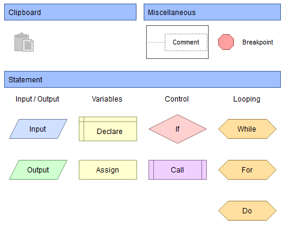

Kijk eerst naar dit filmpje voordat je de tekst leest over wat Flowgoritm is.
Een uitleg video over wat Flowgorithm is
Wanneer is Flowgorithm bedacht?
Flowgorithm is ontwikkeld door Devin Cook en werd in 2014 voor het eerst uitgebracht. Het programma is gemaakt om beginners op een makkelijke manier te leren programmeren.
In plaats van alleen maar code te typen, kun je met Flowgorithm een programma maken met behulp van een stroomschema. Hierin zie je stap voor stap wat een programma moet doen.

Flowgorithm wordt gebruikt wanneer iemand wil leren programmeren of wil uitwerken hoe een programma moet werken. Je maakt een stroomschema met verschillende vormen die elk een bepaalde stap aangeven.
Zo kun je bijvoorbeeld berekeningen uitvoeren, gegevens invoeren en keuzes maken.
Flowgorithm wordt bijvoorbeeld gebruikt voor:
- Gegevens invoeren, zoals een naam of leeftijd.
- Berekeningen uitvoeren, zoals twee getallen bij elkaar optellen.
- Keuzes maken, bijvoorbeeld controleren of iemand oud genoeg is.
- Herhalingen gebruiken, waarbij een stap meerdere keren wordt uitgevoerd.
Flowgorithm wordt vooral gebruikt op scholen en bij programmeerlessen om de basis van programmeren te leren. Je kunt het stroomschema ook omzetten naar echte programmeercode, zoals Python of Java.
Mijn eigen ervaring met Flowgorithm was dat ik het een leuke manier vond om te leren programmeren. Door het stroomschema was alles overzichtelijker en vond ik het leuker om mee te werken.
Toen ik Flowgorithm leerde, maakte ik de opdrachten vaak samen met Shiwen en Deniz en hadden er veel plezier in. Dit vond ik erg leuk, omdat we samen konden werken en elkaar konden helpen. De opdrachten waren uitdagend, maar niet te moeilijk.
Hierdoor vond ik Flowgorithm een fijne en leerzame manier om te leren programmeren.
Dit vond ik de leukste code die ik heb geleerd bij informatica, daarom staat hij op de 1ste plaats van de 3 codes.